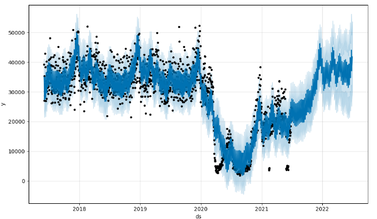
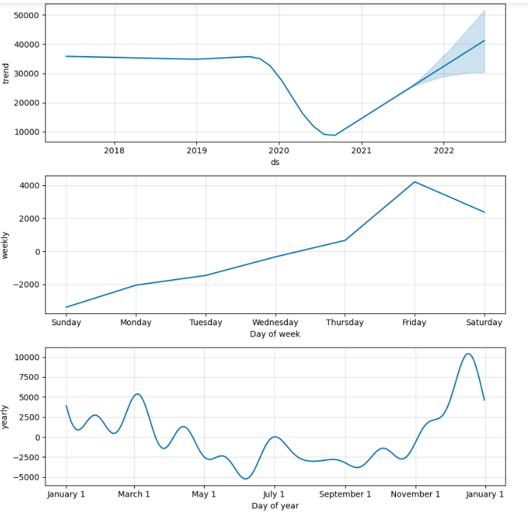
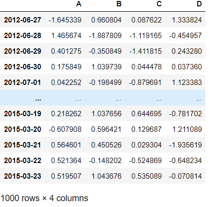
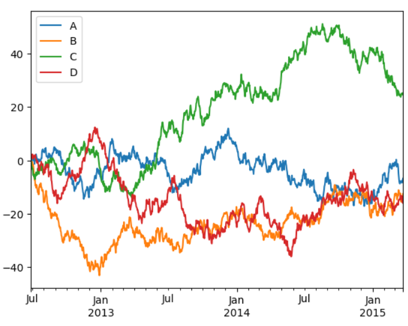
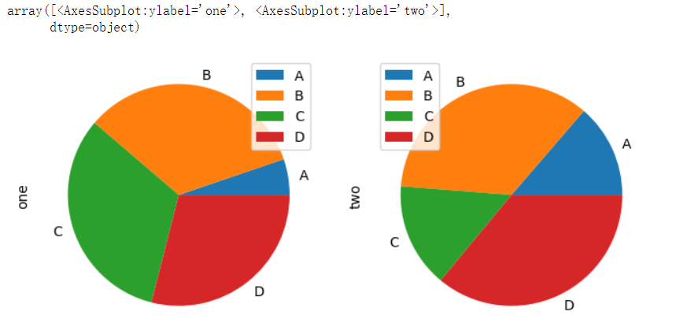

<!DOCTYPE html>


<html lang="Chinese">
  

    <head>
      <meta charset="utf-8" />
        
      <meta name="description" content="我的博客" />
      
      <meta
        name="viewport"
        content="width=device-width, initial-scale=1, maximum-scale=1"
      />
      <title> hexo</title>
  <meta name="generator" content="hexo-theme-ayer">
      
      <link rel="shortcut icon" href="/favicon.ico" />
       
<link rel="stylesheet" href="/dist/main.css">

      
<link rel="stylesheet" href="/css/fonts/remixicon.css">

      
<link rel="stylesheet" href="/css/custom.css">
 
      <script src="https://cdn.staticfile.org/pace/1.2.4/pace.min.js"></script>
       
 

      <link
        rel="stylesheet"
        href="https://cdn.jsdelivr.net/npm/@sweetalert2/theme-bulma@5.0.1/bulma.min.css"
      />
      <script src="https://cdn.jsdelivr.net/npm/sweetalert2@11.0.19/dist/sweetalert2.min.js"></script>

      <!-- mermaid -->
      
      <style>
        .swal2-styled.swal2-confirm {
          font-size: 1.6rem;
        }
      </style>
    </head>
  </html>
</html>


<body>
  <div id="app">
    
      <canvas class="fireworks"></canvas>
      <style>
        .fireworks {
          position: fixed;
          left: 0;
          top: 0;
          z-index: 99999;
          pointer-events: none;
        }
      </style>
      
      
    <main class="content on">
      
<section class="cover">
    
      
      <a class="forkMe" href="https://github.com/Shen-Yu/hexo-theme-ayer"
        target="_blank"></a>
    
  <div class="cover-frame">
    <div class="bg-box">
      
    </div>
    <div class="cover-inner text-center text-white">
      <h1><a href="/">hexo</a></h1>
      <div id="subtitle-box">
        
        <span id="subtitle"></span>
        
      </div>
      <div>
        
      </div>
    </div>
  </div>
  <div class="cover-learn-more">
    <a href="javascript:void(0)" class="anchor"><i class="ri-arrow-down-line"></i></a>
  </div>
</section>


<script src="https://cdn.staticfile.org/typed.js/2.0.12/typed.min.js"></script>


<!-- Subtitle -->

  <script>
    try {
      var typed = new Typed("#subtitle", {
        strings: ['面朝大海，春暖花开', '愿你一生努力，一生被爱', '想要的都拥有，得不到的都释怀'],
        startDelay: 0,
        typeSpeed: 200,
        loop: true,
        backSpeed: 100,
        showCursor: true
      });
    } catch (err) {
      console.log(err)
    }
  </script>
  
<div id="main">
  <section class="outer">
  
  <ul class="ads">
    
        <li>
            <a target="_blank" rel="noopener" href="https://curl.qcloud.com/kvO7hb43">
                
            </a>
        </li>
    
        <li>
            <a target="_blank" rel="noopener" href="https://www.vultr.com/?ref=8630075">
                
            </a>
        </li>
    
</ul>
  
  
  

<div class="notice" style="margin-top:50px">
    <i class="ri-heart-fill"></i>
    <div class="notice-content" id="broad"></div>
</div>
<script type="text/javascript">
    fetch('https://v1.hitokoto.cn')
        .then(response => response.json())
        .then(data => {
            document.getElementById("broad").innerHTML = data.hitokoto;
        })
        .catch(console.error)
</script>

<style>
    .notice {
        padding: 20px;
        border: 1px dashed #e6e6e6;
        color: #969696;
        position: relative;
        display: inline-block;
        width: 100%;
        background: #fbfbfb50;
        border-radius: 10px;
    }

    .notice i {
        float: left;
        color: #999;
        font-size: 16px;
        padding-right: 10px;
        vertical-align: middle;
        margin-top: -2px;
    }

    .notice-content {
        display: initial;
        vertical-align: middle;
    }
</style>
  
  <article class="articles">
    
    
    
    
    <article
  id="post-prophet源码阅读"
  class="article article-type-post"
  itemscope
  itemprop="blogPost"
  data-scroll-reveal
>
  <div class="article-inner">
    
    <header class="article-header">
       
<h2 itemprop="name">
  <a class="article-title" href="/2024/03/21/prophet%E6%BA%90%E7%A0%81%E9%98%85%E8%AF%BB/"
    >prophet源码阅读</a> 
</h2>
 

      
    </header>
     
    <div class="article-meta">
      <a href="/2024/03/21/prophet%E6%BA%90%E7%A0%81%E9%98%85%E8%AF%BB/" class="article-date">
  <time datetime="2024-03-21T02:58:50.000Z" itemprop="datePublished">2024-03-21</time>
</a>    
    </div>
      
    <div class="article-entry" itemprop="articleBody">
       
  <h2 id="1-项目简介"><a href="#1-项目简介" class="headerlink" title="1.项目简介"></a><em>1.项目简介</em></h2><h3 id="1-1-prophet简介"><a href="#1-1-prophet简介" class="headerlink" title="1.1.prophet简介"></a><em>1.1.prophet简介</em></h3><p>prophet是由facebook开发的一款时间序列预测的工具，他具有以下的优缺点:  </p>
<ul>
<li><p>优点：<br>1.易用性高： Prophet 设计简单，易于上手，无需对时间序列预测领域有深入的专业知识，使得非专业人士也能够快速使用。    </p>
<p>2.灵活性强： Prophet 提供了许多参数和选项，可以根据不同的数据特点和预测需求进行调整，灵活适应各种场景。</p>
<p>3.自动化处理： Prophet 可以自动处理数据中的缺失值和异常值，自动检测并适应节假日效应，减轻了用户的预处理负担。<br>4，可解释性强： Prophet 的预测模型基于可解释性强的分解方式，能够直观地展示出趋势、季节性和假日效应等，便于用户理解和解释预测结果。  </p>
</li>
<li><p>缺点：<br>1.局限性： Prophet 的预测模型相对简单，无法处理一些复杂的时间序列模式和特征，例如非线性趋势、多重季节性等。</p>
<p>2.性能问题： 对于大规模的时间序列数据，Prophet 可能会面临性能问题，模型拟合和预测的时间较长，不适用于实时或高频率的预测任务。</p>
<p>3.不适用于所有场景： 由于其简单的模型结构和特性限制，Prophet 不适用于所有的时间序列预测问题，尤其是一些复杂的、高度非线性的场景。</p>
</li>
</ul>
<h2 id="2-核心代码"><a href="#2-核心代码" class="headerlink" title="2.核心代码"></a><em>2.核心代码</em></h2><h3 id="2-1-数据处理"><a href="#2-1-数据处理" class="headerlink" title="2.1.数据处理"></a><em>2.1.数据处理</em></h3><ul>
<li><p>数据读取主要是使用pandas库来读取   </p>
<figure class="highlight plaintext"><table><tr><td class="gutter"><pre><span class="line">1</span><br><span class="line">2</span><br><span class="line">3</span><br></pre></td><td class="code"><pre><span class="line">import pandas as pd</span><br><span class="line">pd.read_csv(path)</span><br><span class="line"></span><br></pre></td></tr></table></figure></li>
<li><p>读取时序数据后，Prophet 在 forecaster.py 中的 _make_future_dataframe 函数中对输入数据进行了处理。  </p>
</li>
</ul>
<h3 id="2-2-模型实例化模块"><a href="#2-2-模型实例化模块" class="headerlink" title="2.2.模型实例化模块"></a><em>2.2.模型实例化模块</em></h3><p>在forecaster.py模块中的Prophet类<br>实例化只需要调用  </p>
<figure class="highlight plaintext"><table><tr><td class="gutter"><pre><span class="line">1</span><br><span class="line">2</span><br></pre></td><td class="code"><pre><span class="line">form prophet import Prophet</span><br><span class="line">m = Prophet()</span><br></pre></td></tr></table></figure>
<p>以上两行代码就将prophet对象实例化给了m  </p>
<figure class="highlight plaintext"><table><tr><td class="gutter"><pre><span class="line">1</span><br><span class="line">2</span><br><span class="line">3</span><br><span class="line">4</span><br><span class="line">5</span><br><span class="line">6</span><br><span class="line">7</span><br><span class="line">8</span><br><span class="line">9</span><br><span class="line">10</span><br><span class="line">11</span><br><span class="line">12</span><br><span class="line">13</span><br><span class="line">14</span><br><span class="line">15</span><br><span class="line">16</span><br><span class="line">17</span><br><span class="line">18</span><br><span class="line">19</span><br><span class="line">20</span><br><span class="line">21</span><br></pre></td><td class="code"><pre><span class="line">def __init__(</span><br><span class="line">            self,</span><br><span class="line">            growth=&#x27;linear&#x27;,</span><br><span class="line">            changepoints=None,</span><br><span class="line">            n_changepoints=25,</span><br><span class="line">            changepoint_range=0.8,</span><br><span class="line">            yearly_seasonality=&#x27;auto&#x27;,</span><br><span class="line">            weekly_seasonality=&#x27;auto&#x27;,</span><br><span class="line">            daily_seasonality=&#x27;auto&#x27;,</span><br><span class="line">            holidays=None,</span><br><span class="line">            seasonality_mode=&#x27;additive&#x27;,</span><br><span class="line">            seasonality_prior_scale=10.0,</span><br><span class="line">            holidays_prior_scale=10.0,</span><br><span class="line">            changepoint_prior_scale=0.05,</span><br><span class="line">            mcmc_samples=0,</span><br><span class="line">            interval_width=0.80,</span><br><span class="line">            uncertainty_samples=1000,</span><br><span class="line">            stan_backend=None,</span><br><span class="line">            scaling: str = &#x27;absmax&#x27;,</span><br><span class="line">            holidays_mode=None,</span><br><span class="line">    ):</span><br></pre></td></tr></table></figure>

<p>由上方的Prophet类__init__()参数可以看到由很多可选参数  </p>
<p>以下分析一些较为常见的参数设置：  </p>
<ul>
<li>growth：默认为linear，可选logistic和flat</li>
<li>changepoints：可指定历史数据中哪天为changepoint</li>
<li>n_changepoints:设置潜在变化点，默认为25</li>
<li>changepoint_rangem：推断历史数据的前多少百分比，默认情况为0.8</li>
<li>changepoint_prior_scale：设置趋势的灵活性，如果趋势变化是过拟合（灵活性过高）或拟合欠（灵活性不足），则可以使用输入参数调整稀疏先验的强度。默认情况下，此参数设置为 0.05</li>
<li>yearly_seasonlity:默认为‘auto’，表示当历史数据大于一年时自动分析yearly的周期性变化</li>
<li>weakly_seasonlity与daily_seasonlity同yearly_seasonlity</li>
<li>holidays:属于外部影响因素，为Dataframe形式，可以为python内定的节假日也可以是自己指定的节假日</li>
<li>seasonality_mode：表示预测结果是trend+seasonlity还是trend*seasonlity，大部分工业应用为乘法模式，prophet默认为加法模式  </li>
</ul>
<h4 id="Prophet类中一些常用的函数："><a href="#Prophet类中一些常用的函数：" class="headerlink" title="Prophet类中一些常用的函数："></a>Prophet类中一些常用的函数：</h4><ul>
<li><p>def add_country_holidays(self, country_name):<br>这是prophet中加入内置节假日的函数,使用方法如下： </p>
<figure class="highlight plaintext"><table><tr><td class="gutter"><pre><span class="line">1</span><br><span class="line">2</span><br><span class="line">3</span><br><span class="line">4</span><br></pre></td><td class="code"><pre><span class="line">m = Prophet(holidays=holidays)</span><br><span class="line">m.add_country_holidays(country_name=&#x27;US&#x27;)</span><br><span class="line">m.fit(df)</span><br><span class="line">forecast = m.predict(future</span><br></pre></td></tr></table></figure></li>
<li><p>def add_seasonality(self, name, period, fourier_order, prior_scale=None,</p>
<pre><code>                  mode=None, condition_name=None):
</code></pre>
</li>
</ul>
<p>自定义周期函数：<br>不同与一个月，一周，一年的周期，可以自定义多久时间来分析周期变化</p>
<ul>
<li>def add_regressor(self, name, prior_scale=None, standardize=’auto’,<pre><code>                mode=None):  
</code></pre>
添加自定义外部影响的函数</li>
</ul>
<h3 id="2-3-模型训练"><a href="#2-3-模型训练" class="headerlink" title="2.3.模型训练"></a>2.3.模型训练</h3><p>prophet训练模型类似于sklearn，forester.py中fit函数进行模型的训练：<br> <figure class="highlight plaintext"><table><tr><td class="gutter"><pre><span class="line">1</span><br></pre></td><td class="code"><pre><span class="line">m.fit(ds) #训练模型</span><br></pre></td></tr></table></figure></p>
<h3 id="2-3-模型预测"><a href="#2-3-模型预测" class="headerlink" title="2.3.模型预测"></a>2.3.模型预测</h3><p>prophet的预测也相似于sklearn，依靠forester.py中的predic函数</p>
<figure class="highlight plaintext"><table><tr><td class="gutter"><pre><span class="line">1</span><br><span class="line">2</span><br><span class="line">3</span><br><span class="line">4</span><br><span class="line">5</span><br><span class="line">6</span><br><span class="line">7</span><br><span class="line">8</span><br></pre></td><td class="code"><pre><span class="line">    forecast = m.predict(future)</span><br><span class="line">```  </span><br><span class="line">  </span><br><span class="line">  </span><br><span class="line">### 2.4.可视化模块</span><br><span class="line">  prophet的可视化也很方便包，在Prophet类中有plot、plot_components函数，用于绘制预测结果图和各个组成部分的图：  </span><br><span class="line">```commandline</span><br><span class="line">    m.plot(forecast)</span><br></pre></td></tr></table></figure>
<p> 通过以上代码可以显示出预测结果的可视化，如下所示：<br>  </p>
<p>通过以下代码可得预测各部分(趋势和周期性）的可视化：</p>
<figure class="highlight plaintext"><table><tr><td class="gutter"><pre><span class="line">1</span><br></pre></td><td class="code"><pre><span class="line">m.plot_compoents(forecast)</span><br></pre></td></tr></table></figure>
<p></p>
 
      <!-- reward -->
      
    </div>
    

    <!-- copyright -->
    
    <footer class="article-footer">
       
    </footer>
  </div>

   
   
  
</article>

    
    <article
  id="post-visdom"
  class="article article-type-post"
  itemscope
  itemprop="blogPost"
  data-scroll-reveal
>
  <div class="article-inner">
    
    <header class="article-header">
       
<h2 itemprop="name">
  <a class="article-title" href="/2024/02/21/visdom/"
    >visdom</a> 
</h2>
 

      
    </header>
     
    <div class="article-meta">
      <a href="/2024/02/21/visdom/" class="article-date">
  <time datetime="2024-02-21T15:01:05.000Z" itemprop="datePublished">2024-02-21</time>
</a>    
    </div>
      
    <div class="article-entry" itemprop="articleBody">
       
  <h2 id="visdom"><a href="#visdom" class="headerlink" title="visdom"></a><em>visdom</em></h2><p>在深度学习领域中，数据的可视化是非常重要的一个环节，visdom就是facebook开发专为pytorch定制的一个可视化工具</p>
<h3 id="1-visdom的安装："><a href="#1-visdom的安装：" class="headerlink" title="1.visdom的安装："></a>1.visdom的安装：</h3><p>输入如下命令：  </p>
<pre><code>pip install visdom
</code></pre>
 
      <!-- reward -->
      
    </div>
    

    <!-- copyright -->
    
    <footer class="article-footer">
       
  <ul class="article-tag-list" itemprop="keywords"><li class="article-tag-list-item"><a class="article-tag-list-link" href="/tags/pytorch%EF%BC%8Cvisdom/" rel="tag">pytorch，visdom</a></li></ul>

    </footer>
  </div>

   
   
  
</article>

    
    <article
  id="post-kaggle实战1"
  class="article article-type-post"
  itemscope
  itemprop="blogPost"
  data-scroll-reveal
>
  <div class="article-inner">
    
    <header class="article-header">
       
<h2 itemprop="name">
  <a class="article-title" href="/2024/02/20/kaggle%E5%AE%9E%E6%88%981/"
    >Kaggle经典案例1</a> 
</h2>
 

      
    </header>
     
    <div class="article-meta">
      <a href="/2024/02/20/kaggle%E5%AE%9E%E6%88%981/" class="article-date">
  <time datetime="2024-02-20T11:22:58.000Z" itemprop="datePublished">2024-02-20</time>
</a>    
    </div>
      
    <div class="article-entry" itemprop="articleBody">
       
  <h3 id="dogs-vs-cats"><a href="#dogs-vs-cats" class="headerlink" title="dogs vs cats"></a><em>dogs vs cats</em></h3><p>Dogs vs，Cats是一个传统的二分类问题，其训练集包含25000张图片，均放置在同一文件夹下，命名格式为<categry>,num&gt;,jpg ，如at,10880.jpg 、<br>dog.18.jpg ，测试集包含1250张图片，命名为num&gt;jpg ，如10.jpg 。参赛者需根据训练集的图片训练模型，并在测试集上进行预测，输出它是狗的杨<br>率。最后提交的csv文件如下，第一列是图片的~<num>，第二列是图片为狗的概率。  </p>
<h3 id="1-要点梳理"><a href="#1-要点梳理" class="headerlink" title="1.要点梳理"></a>1.要点梳理</h3><p>程序主要包含以下功能：</p>
<ul>
<li>模型定义</li>
<li>数据加载</li>
<li>训练和测试</li>
</ul>
<h3 id="2-数据加载模块"><a href="#2-数据加载模块" class="headerlink" title="2.数据加载模块"></a>2.数据加载模块</h3><p>数据的相关处理主要保存在<code>data/dataset.py</code>中。关于数据加载的相关操作，在上一章中我们已经提到过，其基本原理就是使用<code>Dataset</code>提供数据集的封装，再使用<code>Dataloader</code>实现数据并行加载。Kaggle提供的数据包括训练集和测试集，而我们在实际使用中，还需专门从训练集中取出一部分作为验证集。对于这三类数据集，其相应操作也不太一样，而如果专门写三个<code>Dataset</code>，则稍显复杂和冗余，因此这里通过加一些判断来区分。对于训练集，我们希望做一些数据增强处理，如随机裁剪、随机翻转、加噪声等，而验证集和测试集则不需要。下面看<code>dataset.py</code>的代码：</p>
<details>
  <summary>点击展开/折叠代码</summary>

<figure class="highlight plaintext"><table><tr><td class="gutter"><pre><span class="line">1</span><br><span class="line">2</span><br><span class="line">3</span><br><span class="line">4</span><br><span class="line">5</span><br><span class="line">6</span><br><span class="line">7</span><br><span class="line">8</span><br><span class="line">9</span><br><span class="line">10</span><br><span class="line">11</span><br><span class="line">12</span><br><span class="line">13</span><br><span class="line">14</span><br><span class="line">15</span><br><span class="line">16</span><br><span class="line">17</span><br><span class="line">18</span><br><span class="line">19</span><br><span class="line">20</span><br><span class="line">21</span><br><span class="line">22</span><br><span class="line">23</span><br><span class="line">24</span><br><span class="line">25</span><br><span class="line">26</span><br><span class="line">27</span><br><span class="line">28</span><br><span class="line">29</span><br><span class="line">30</span><br><span class="line">31</span><br><span class="line">32</span><br><span class="line">33</span><br><span class="line">34</span><br><span class="line">35</span><br><span class="line">36</span><br><span class="line">37</span><br><span class="line">38</span><br><span class="line">39</span><br><span class="line">40</span><br><span class="line">41</span><br><span class="line">42</span><br><span class="line">43</span><br><span class="line">44</span><br><span class="line">45</span><br><span class="line">46</span><br><span class="line">47</span><br><span class="line">48</span><br><span class="line">49</span><br><span class="line">50</span><br><span class="line">51</span><br><span class="line">52</span><br><span class="line">53</span><br><span class="line">54</span><br><span class="line">55</span><br><span class="line">56</span><br><span class="line">57</span><br><span class="line">58</span><br><span class="line">59</span><br><span class="line">60</span><br><span class="line">61</span><br><span class="line">62</span><br><span class="line">63</span><br><span class="line">64</span><br><span class="line">65</span><br><span class="line">66</span><br><span class="line">67</span><br><span class="line">68</span><br><span class="line">69</span><br><span class="line">70</span><br><span class="line">71</span><br><span class="line">72</span><br><span class="line">73</span><br><span class="line">74</span><br><span class="line">75</span><br><span class="line">76</span><br><span class="line">77</span><br><span class="line">78</span><br></pre></td><td class="code"><pre><span class="line">import os</span><br><span class="line">from PIL import Image</span><br><span class="line">from torch.utils import data</span><br><span class="line">import numpy as np</span><br><span class="line">from torchvision import transforms as T</span><br><span class="line"></span><br><span class="line"></span><br><span class="line">class DogCat(data.Dataset):</span><br><span class="line">    </span><br><span class="line">    def __init__(self, root, transforms=None, train=True, test=False):</span><br><span class="line">        &quot;&quot;&quot;</span><br><span class="line">        目标：获取所有图片地址，并根据训练、验证、测试划分数据</span><br><span class="line">        &quot;&quot;&quot;</span><br><span class="line">        self.test = test</span><br><span class="line">        imgs = [os.path.join(root, img) for img in os.listdir(root)] </span><br><span class="line"></span><br><span class="line">        # test1: data/test1/8973.jpg</span><br><span class="line">        # train: data/train/cat.10004.jpg </span><br><span class="line">        if self.test:</span><br><span class="line">            imgs = sorted(imgs, key=lambda x: int(x.split(&#x27;.&#x27;)[-2].split(&#x27;/&#x27;)[-1])) #lambda表示构造函数，传入的参数是x</span><br><span class="line">        else:</span><br><span class="line">            imgs = sorted(imgs, key=lambda x: int(x.split(&#x27;.&#x27;)[-2]))</span><br><span class="line">            </span><br><span class="line">        imgs_num = len(imgs)</span><br><span class="line">        </span><br><span class="line">        # 划分训练、验证集，验证:训练 = 3:7</span><br><span class="line">        if self.test:</span><br><span class="line">            self.imgs = imgs</span><br><span class="line">        elif train:</span><br><span class="line">            self.imgs = imgs[:int(0.7*imgs_num)]</span><br><span class="line">        else :</span><br><span class="line">            self.imgs = imgs[int(0.7*imgs_num):]            </span><br><span class="line">    </span><br><span class="line">        if transforms is None:</span><br><span class="line">        </span><br><span class="line">            # 数据转换操作，测试验证和训练的数据转换有所区别</span><br><span class="line">	        </span><br><span class="line">            normalize = T.Normalize(mean = [0.485, 0.456, 0.406], </span><br><span class="line">                                     std = [0.229, 0.224, 0.225])</span><br><span class="line"></span><br><span class="line">            # 测试集和验证集</span><br><span class="line">            if self.test or not train: </span><br><span class="line">                self.transforms = T.Compose([</span><br><span class="line">                    T.Resize(224),</span><br><span class="line">                    T.CenterCrop(224),</span><br><span class="line">                    T.ToTensor(),</span><br><span class="line">                    normalize</span><br><span class="line">                ]) </span><br><span class="line">            # 训练集</span><br><span class="line">            else :</span><br><span class="line">                self.transforms = T.Compose([</span><br><span class="line">                    T.Resize(256),</span><br><span class="line">                    T.RandomReSizedCrop(224),</span><br><span class="line">                    T.RandomHorizontalFlip(),  #训练集中需要一点杂质</span><br><span class="line">                    T.ToTensor(),</span><br><span class="line">                    normalize</span><br><span class="line">                ]) </span><br><span class="line">                </span><br><span class="line">        </span><br><span class="line">    def __getitem__(self, index):</span><br><span class="line">        &quot;&quot;&quot;</span><br><span class="line">        返回一张图片的数据</span><br><span class="line">        对于测试集，没有label，返回图片id，如1000.jpg返回1000</span><br><span class="line">        &quot;&quot;&quot;</span><br><span class="line">        img_path = self.imgs[index]</span><br><span class="line">        if self.test: </span><br><span class="line">             label = int(self.imgs[index].split(&#x27;.&#x27;)[-2].split(&#x27;/&#x27;)[-1])</span><br><span class="line">        else: </span><br><span class="line">             label = 1 if &#x27;dog&#x27; in img_path.split(&#x27;/&#x27;)[-1] else 0</span><br><span class="line">        data = Image.open(img_path)</span><br><span class="line">        data = self.transforms(data)</span><br><span class="line">        return data, label</span><br><span class="line">    </span><br><span class="line">    def __len__(self):</span><br><span class="line">        &quot;&quot;&quot;</span><br><span class="line">        返回数据集中所有图片的个数</span><br><span class="line">        &quot;&quot;&quot;</span><br><span class="line">        return len(self.imgs)</span><br></pre></td></tr></table></figure>
</details>

<h3 id="3-模型定义模块"><a href="#3-模型定义模块" class="headerlink" title="3.模型定义模块"></a>3.模型定义模块</h3><p>模型的定义主要保存在<code>models/</code>目录下，其中<code>BasicModule</code>是对<code>nn.Module</code>的简易封装，提供快速加载和保存模型的接口。  </p>
<details>
<summary>点击展开/折叠代码</summary>

<figure class="highlight plaintext"><table><tr><td class="gutter"><pre><span class="line">1</span><br><span class="line">2</span><br><span class="line">3</span><br><span class="line">4</span><br><span class="line">5</span><br><span class="line">6</span><br><span class="line">7</span><br><span class="line">8</span><br><span class="line">9</span><br><span class="line">10</span><br><span class="line">11</span><br><span class="line">12</span><br><span class="line">13</span><br><span class="line">14</span><br><span class="line">15</span><br><span class="line">16</span><br><span class="line">17</span><br><span class="line">18</span><br><span class="line">19</span><br><span class="line">20</span><br><span class="line">21</span><br><span class="line">22</span><br><span class="line">23</span><br><span class="line">24</span><br><span class="line">25</span><br></pre></td><td class="code"><pre><span class="line">class BasicModule(t.nn.Module):</span><br><span class="line">    &quot;&quot;&quot;</span><br><span class="line">    封装了nn.Module，主要提供save和load两个方法</span><br><span class="line">    &quot;&quot;&quot;</span><br><span class="line"></span><br><span class="line">    def __init__(self):</span><br><span class="line">        super(BasicModule,self).__init__()</span><br><span class="line">        self.model_name = str(type(self)) # 模型的默认名字</span><br><span class="line"></span><br><span class="line">    def load(self, path):</span><br><span class="line">        &quot;&quot;&quot;</span><br><span class="line">        可加载指定路径的模型</span><br><span class="line">        &quot;&quot;&quot;    </span><br><span class="line">        self.load_state_dict(t.load(path))</span><br><span class="line"></span><br><span class="line">    def save(self, name=None):</span><br><span class="line">        &quot;&quot;&quot;</span><br><span class="line">        保存模型，默认使用“模型名字+时间”作为文件名，</span><br><span class="line">        如AlexNet_0710_23:57:29.pth</span><br><span class="line">        &quot;&quot;&quot;</span><br><span class="line">        if name is None:</span><br><span class="line">            prefix = &#x27;checkpoints/&#x27; + self.model_name + &#x27;_&#x27;</span><br><span class="line">            name = time.strftime(prefix + &#x27;%m%d_%H:%M:%S.pth&#x27;)</span><br><span class="line">        t.save(self.state_dict(), name)</span><br><span class="line">        return name</span><br></pre></td></tr></table></figure>

</details>

 
      <!-- reward -->
      
    </div>
    

    <!-- copyright -->
    
    <footer class="article-footer">
       
  <ul class="article-tag-list" itemprop="keywords"><li class="article-tag-list-item"><a class="article-tag-list-link" href="/tags/pytorch-kaggle/" rel="tag">pytorch kaggle</a></li></ul>

    </footer>
  </div>

   
   
  
</article>

    
    <article
  id="post-CIFAIR-10分类"
  class="article article-type-post"
  itemscope
  itemprop="blogPost"
  data-scroll-reveal
>
  <div class="article-inner">
     
    <div class="article-meta">
      <a href="/2024/02/11/CIFAIR-10%E5%88%86%E7%B1%BB/" class="article-date">
  <time datetime="2024-02-11T13:43:46.395Z" itemprop="datePublished">2024-02-11</time>
</a>    
    </div>
      
    <div class="article-entry" itemprop="articleBody">
       
  <h2 id="CIFAIR-10分类"><a href="#CIFAIR-10分类" class="headerlink" title="CIFAIR-10分类"></a>CIFAIR-10分类</h2><h3 id="入门实战篇"><a href="#入门实战篇" class="headerlink" title="入门实战篇"></a>入门实战篇</h3><p>小试牛刀: CIFAR-10分类<br>下面我们来尝试实现对CIFAR-10数据集的分类，步骤如下：<br>1.使用torchvision加载并预处理CIFAR-10数据集<br>2.定义网络<br>3定义损失函数和优化器<br>4.训练网络并更新网络参数<br>5.测试网络    </p>
<h3 id="数据预处理部分："><a href="#数据预处理部分：" class="headerlink" title="数据预处理部分："></a>数据预处理部分：</h3><figure class="highlight plaintext"><table><tr><td class="gutter"><pre><span class="line">1</span><br><span class="line">2</span><br><span class="line">3</span><br><span class="line">4</span><br><span class="line">5</span><br><span class="line">6</span><br><span class="line">7</span><br><span class="line">8</span><br><span class="line">9</span><br><span class="line">10</span><br></pre></td><td class="code"><pre><span class="line">import torchvision as tv</span><br><span class="line">import torchvision.transforms as transforms</span><br><span class="line">from torchvision.transforms import ToPILImage</span><br><span class="line">show = ToPILImage() # 可以把Tensor转成Image，方便可视化</span><br><span class="line">```   </span><br><span class="line">commandline</span><br><span class="line"></span><br><span class="line"># 定义对数据的预处理</span><br><span class="line">&lt;details&gt;</span><br><span class="line">&lt;summary&gt;点击展开/和并代码&lt;/summary&gt;</span><br></pre></td></tr></table></figure>
<p>transform = transforms.Compose([<br>        transforms.ToTensor(), # 转为Tensor<br>        transforms.Normalize((0.5, 0.5, 0.5), (0.5, 0.5, 0.5)), # 归一化<br>                             ])</p>
<h1 id="训练集"><a href="#训练集" class="headerlink" title="训练集"></a>训练集</h1><p>trainset = tv.datasets.CIFAR10(<br>                    root=’/home/cy/tmp/data/‘,<br>                    train=True,<br>                    download=True,<br>                    transform=transform)</p>
<p>trainloader = t.utils.data.DataLoader(<br>                    trainset,<br>                    batch_size=4,<br>                    shuffle=True,<br>                    num_workers=2)</p>
<h1 id="测试集"><a href="#测试集" class="headerlink" title="测试集"></a>测试集</h1><p>testset = tv.datasets.CIFAR10(<br>                    ‘/home/cy/tmp/data/‘,<br>                    train=False,<br>                    download=True,<br>                    transform=transform)</p>
<p>testloader = t.utils.data.DataLoader(<br>                    testset,<br>                    batch_size=4,<br>                    shuffle=False,<br>                    num_workers=2)</p>
<p>classes = (‘plane’, ‘car’, ‘bird’, ‘cat’,<br>           ‘deer’, ‘dog’, ‘frog’, ‘horse’, ‘ship’, ‘truck’)</p>
<pre><code>
&lt;/details&gt;

</code></pre>
 
      <!-- reward -->
      
    </div>
    

    <!-- copyright -->
    
    <footer class="article-footer">
       
    </footer>
  </div>

   
   
  
</article>

    
    <article
  id="post-数据可视化"
  class="article article-type-post"
  itemscope
  itemprop="blogPost"
  data-scroll-reveal
>
  <div class="article-inner">
    
    <header class="article-header">
       
<h2 itemprop="name">
  <a class="article-title" href="/2024/01/01/%E6%95%B0%E6%8D%AE%E5%8F%AF%E8%A7%86%E5%8C%96/"
    >数据可视化</a> 
</h2>
 

      
    </header>
     
    <div class="article-meta">
      <a href="/2024/01/01/%E6%95%B0%E6%8D%AE%E5%8F%AF%E8%A7%86%E5%8C%96/" class="article-date">
  <time datetime="2024-01-01T11:22:58.000Z" itemprop="datePublished">2024-01-01</time>
</a>    
    </div>
      
    <div class="article-entry" itemprop="articleBody">
       
  <h3 id="数据可视化"><a href="#数据可视化" class="headerlink" title="数据可视化"></a><em>数据可视化</em></h3><p>例如在jupyter中运行一段这样的代代码:  </p>
<pre><code>import numpy as np
import pandas as pd
df1 = pd.DataFrame(data = np.random.randn(1000,4),
              index = pd.date_range(start=&#39;27/6/2012&#39;,periods=1000),
               columns = list(&#39;ABCD&#39;))
df1
</code></pre>
<p>运行结果如下:<br></p>
<hr>
<h4 id="线性图："><a href="#线性图：" class="headerlink" title="线性图："></a>线性图：</h4><pre><code>df1.cumsum().plot()
</code></pre>
<p>结果如下：<br></p>
<hr>
<h4 id="柱形图："><a href="#柱形图：" class="headerlink" title="柱形图："></a>柱形图：</h4><p>利用bar函数：</p>
<pre><code>df1.plot.bar(stacked = True) #stacked参数决定是否堆叠
</code></pre>
<hr>
<h5 id="饼图：表示百分比"><a href="#饼图：表示百分比" class="headerlink" title="饼图：表示百分比"></a>饼图：表示百分比</h5><p>利用pie函数：</p>
<figure class="highlight plaintext"><table><tr><td class="gutter"><pre><span class="line">1</span><br><span class="line">2</span><br><span class="line">3</span><br><span class="line">4</span><br><span class="line">5</span><br></pre></td><td class="code"><pre><span class="line">df2 = pd.DataFrame(data = np.random.randn(4,2),</span><br><span class="line">                    columns = [&#x27;one&#x27;,&#x27;two&#x27;],</span><br><span class="line">                    index = list(&#x27;ABCD&#x27;)</span><br><span class="line">                    )</span><br><span class="line">df2.plot.pie(suplots=True,figsize=(8,8))</span><br></pre></td></tr></table></figure>
<p>运行结果如下：</p>

---
#### 散点图：用于绘制A与B的关系
利用scatter函数作图：  


 
      <!-- reward -->
      
    </div>
    

    <!-- copyright -->
    
    <footer class="article-footer">
       
  <ul class="article-tag-list" itemprop="keywords"><li class="article-tag-list-item"><a class="article-tag-list-link" href="/tags/%E6%95%B0%E6%8D%AE%E5%A4%84%E7%90%86/" rel="tag">数据处理</a></li></ul>

    </footer>
  </div>

   
   
  
</article>

    
  </article>
  

  
</section>
</div>

      <footer class="footer">
  <div class="outer">
    <ul>
      <li>
        Copyrights &copy;
        2022-2024
        <i class="ri-heart-fill heart_icon"></i> Yutouegg
      </li>
    </ul>
    <ul>
      <li>
        
      </li>
    </ul>
    <ul>
      <li>
        
        
        <span>
  <span><i class="ri-user-3-fill"></i>Visitors:<span id="busuanzi_value_site_uv"></span></span>
  <span class="division">|</span>
  <span><i class="ri-eye-fill"></i>Views:<span id="busuanzi_value_page_pv"></span></span>
</span>
        
      </li>
    </ul>
    <ul>
      
    </ul>
    <ul>
      
    </ul>
    <ul>
      <li>
        <!-- cnzz统计 -->
        
        <script type="text/javascript" src='https://s9.cnzz.com/z_stat.php?id=1278069914&amp;web_id=1278069914'></script>
        
      </li>
    </ul>
  </div>
</footer>    
    </main>
    <div class="float_btns">
      <div class="totop" id="totop">
  <i class="ri-arrow-up-line"></i>
</div>

<div class="todark" id="todark">
  <i class="ri-moon-line"></i>
</div>

    </div>
    <aside class="sidebar on">
      <button class="navbar-toggle"></button>
<nav class="navbar">
  
  <div class="logo">
    <a href="/"></a>
  </div>
  
  <ul class="nav nav-main">
    
    <li class="nav-item">
      <a class="nav-item-link" href="/">主页</a>
    </li>
    
    <li class="nav-item">
      <a class="nav-item-link" href="/archives">归档</a>
    </li>
    
    <li class="nav-item">
      <a class="nav-item-link" href="/categories">分类</a>
    </li>
    
    <li class="nav-item">
      <a class="nav-item-link" href="/tags">标签</a>
    </li>
    
    <li class="nav-item">
      <a class="nav-item-link" href="/friends">友链</a>
    </li>
    
    <li class="nav-item">
      <a class="nav-item-link" href="/2019/about">关于我</a>
    </li>
    
  </ul>
</nav>
<nav class="navbar navbar-bottom">
  <ul class="nav">
    <li class="nav-item">
      
      <a class="nav-item-link nav-item-search"  title="Search">
        <i class="ri-search-line"></i>
      </a>
      
      
      <a class="nav-item-link" target="_blank" href="/atom.xml" title="RSS Feed">
        <i class="ri-rss-line"></i>
      </a>
      
    </li>
  </ul>
</nav>
<div class="search-form-wrap">
  <div class="local-search local-search-plugin">
  <input type="search" id="local-search-input" class="local-search-input" placeholder="Search...">
  <div id="local-search-result" class="local-search-result"></div>
</div>
</div>
    </aside>
    <div id="mask"></div>

<!-- #reward -->
<div id="reward">
  <span class="close"><i class="ri-close-line"></i></span>
  <p class="reward-p"><i class="ri-cup-line"></i>请我喝杯咖啡吧~</p>
  <div class="reward-box">
    
    <div class="reward-item">
      
      <span class="reward-type">支付宝</span>
    </div>
    
    
    <div class="reward-item">
      
      <span class="reward-type">微信</span>
    </div>
    
  </div>
</div>
    
<script src="/js/jquery-3.6.0.min.js"></script>
 
<script src="/js/lazyload.min.js"></script>

<!-- Tocbot -->

<script src="https://cdn.staticfile.org/jquery-modal/0.9.2/jquery.modal.min.js"></script>
<link
  rel="stylesheet"
  href="https://cdn.staticfile.org/jquery-modal/0.9.2/jquery.modal.min.css"
/>
<script src="https://cdn.staticfile.org/justifiedGallery/3.8.1/js/jquery.justifiedGallery.min.js"></script>

<script src="/dist/main.js"></script>

<!-- ImageViewer -->
 <!-- Root element of PhotoSwipe. Must have class pswp. -->
<div class="pswp" tabindex="-1" role="dialog" aria-hidden="true">

    <!-- Background of PhotoSwipe. 
         It's a separate element as animating opacity is faster than rgba(). -->
    <div class="pswp__bg"></div>

    <!-- Slides wrapper with overflow:hidden. -->
    <div class="pswp__scroll-wrap">

        <!-- Container that holds slides. 
            PhotoSwipe keeps only 3 of them in the DOM to save memory.
            Don't modify these 3 pswp__item elements, data is added later on. -->
        <div class="pswp__container">
            <div class="pswp__item"></div>
            <div class="pswp__item"></div>
            <div class="pswp__item"></div>
        </div>

        <!-- Default (PhotoSwipeUI_Default) interface on top of sliding area. Can be changed. -->
        <div class="pswp__ui pswp__ui--hidden">

            <div class="pswp__top-bar">

                <!--  Controls are self-explanatory. Order can be changed. -->

                <div class="pswp__counter"></div>

                <button class="pswp__button pswp__button--close" title="Close (Esc)"></button>

                <button class="pswp__button pswp__button--share" style="display:none" title="Share"></button>

                <button class="pswp__button pswp__button--fs" title="Toggle fullscreen"></button>

                <button class="pswp__button pswp__button--zoom" title="Zoom in/out"></button>

                <!-- Preloader demo http://codepen.io/dimsemenov/pen/yyBWoR -->
                <!-- element will get class pswp__preloader--active when preloader is running -->
                <div class="pswp__preloader">
                    <div class="pswp__preloader__icn">
                        <div class="pswp__preloader__cut">
                            <div class="pswp__preloader__donut"></div>
                        </div>
                    </div>
                </div>
            </div>

            <div class="pswp__share-modal pswp__share-modal--hidden pswp__single-tap">
                <div class="pswp__share-tooltip"></div>
            </div>

            <button class="pswp__button pswp__button--arrow--left" title="Previous (arrow left)">
            </button>

            <button class="pswp__button pswp__button--arrow--right" title="Next (arrow right)">
            </button>

            <div class="pswp__caption">
                <div class="pswp__caption__center"></div>
            </div>

        </div>

    </div>

</div>

<link rel="stylesheet" href="https://cdn.staticfile.org/photoswipe/4.1.3/photoswipe.min.css">
<link rel="stylesheet" href="https://cdn.staticfile.org/photoswipe/4.1.3/default-skin/default-skin.min.css">
<script src="https://cdn.staticfile.org/photoswipe/4.1.3/photoswipe.min.js"></script>
<script src="https://cdn.staticfile.org/photoswipe/4.1.3/photoswipe-ui-default.min.js"></script>

<script>
    function viewer_init() {
        let pswpElement = document.querySelectorAll('.pswp')[0];
        let $imgArr = document.querySelectorAll(('.article-entry img:not(.reward-img)'))

        $imgArr.forEach(($em, i) => {
            $em.onclick = () => {
                // slider展开状态
                // todo: 这样不好，后面改成状态
                if (document.querySelector('.left-col.show')) return
                let items = []
                $imgArr.forEach(($em2, i2) => {
                    let img = $em2.getAttribute('data-idx', i2)
                    let src = $em2.getAttribute('data-target') || $em2.getAttribute('src')
                    let title = $em2.getAttribute('alt')
                    // 获得原图尺寸
                    const image = new Image()
                    image.src = src
                    items.push({
                        src: src,
                        w: image.width || $em2.width,
                        h: image.height || $em2.height,
                        title: title
                    })
                })
                var gallery = new PhotoSwipe(pswpElement, PhotoSwipeUI_Default, items, {
                    index: parseInt(i)
                });
                gallery.init()
            }
        })
    }
    viewer_init()
</script> 
<!-- MathJax -->

<!-- Katex -->

<!-- busuanzi  -->
 
<script src="/js/busuanzi-2.3.pure.min.js"></script>
 
<!-- ClickLove -->

<!-- ClickBoom1 -->

<script src="https://cdn.staticfile.org/animejs/3.2.1/anime.min.js"></script>

<script src="/js/clickBoom1.js"></script>
 
<!-- ClickBoom2 -->

<!-- CodeCopy -->
 
<link rel="stylesheet" href="/css/clipboard.css">
 <script src="https://cdn.staticfile.org/clipboard.js/2.0.10/clipboard.min.js"></script>
<script>
  function wait(callback, seconds) {
    var timelag = null;
    timelag = window.setTimeout(callback, seconds);
  }
  !function (e, t, a) {
    var initCopyCode = function(){
      var copyHtml = '';
      copyHtml += '<button class="btn-copy" data-clipboard-snippet="">';
      copyHtml += '<i class="ri-file-copy-2-line"></i><span>COPY</span>';
      copyHtml += '</button>';
      $(".highlight .code pre").before(copyHtml);
      $(".article pre code").before(copyHtml);
      var clipboard = new ClipboardJS('.btn-copy', {
        target: function(trigger) {
          return trigger.nextElementSibling;
        }
      });
      clipboard.on('success', function(e) {
        let $btn = $(e.trigger);
        $btn.addClass('copied');
        let $icon = $($btn.find('i'));
        $icon.removeClass('ri-file-copy-2-line');
        $icon.addClass('ri-checkbox-circle-line');
        let $span = $($btn.find('span'));
        $span[0].innerText = 'COPIED';
        
        wait(function () { // 等待两秒钟后恢复
          $icon.removeClass('ri-checkbox-circle-line');
          $icon.addClass('ri-file-copy-2-line');
          $span[0].innerText = 'COPY';
        }, 2000);
      });
      clipboard.on('error', function(e) {
        e.clearSelection();
        let $btn = $(e.trigger);
        $btn.addClass('copy-failed');
        let $icon = $($btn.find('i'));
        $icon.removeClass('ri-file-copy-2-line');
        $icon.addClass('ri-time-line');
        let $span = $($btn.find('span'));
        $span[0].innerText = 'COPY FAILED';
        
        wait(function () { // 等待两秒钟后恢复
          $icon.removeClass('ri-time-line');
          $icon.addClass('ri-file-copy-2-line');
          $span[0].innerText = 'COPY';
        }, 2000);
      });
    }
    initCopyCode();
  }(window, document);
</script>
 
<!-- CanvasBackground -->
 
<script src="/js/dz.js"></script>
 
<script>
  if (window.mermaid) {
    mermaid.initialize({ theme: "forest" });
  }
</script>


    
    <div id="music">
    
    
    
    <iframe frameborder="no" border="1" marginwidth="0" marginheight="0" width="200" height="52"
        src="//music.163.com/outchain/player?type=2&id=9184412670&auto=1&height=32"></iframe>
</div>

<style>
    #music {
        position: fixed;
        right: 15px;
        bottom: 0;
        z-index: 998;
    }
</style>
    
    

  </div>
</body>

</html>